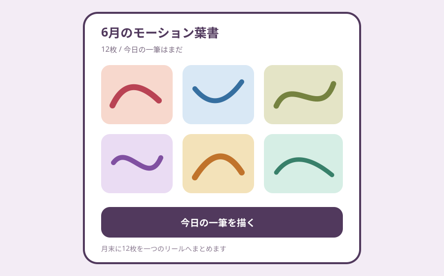
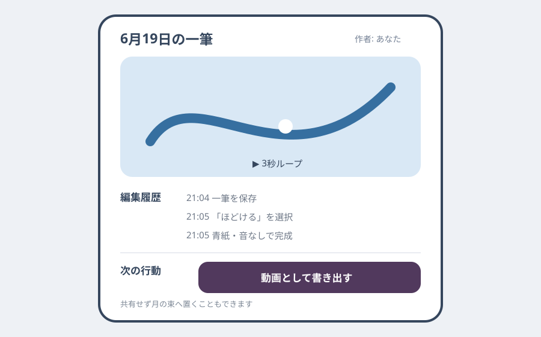

Question Note
一筆だけで動く「モーション葉書」アプリ事業案


体験の全体像
「モーション葉書」は、指またはペンで一筆だけ描くと、線の速度・圧力・曲がり方をもとに3秒のループアニメーションと短い音が生まれるアプリです。上手な絵や長時間の制作は求めず、その日の手の動きを一枚だけ残す軽い創作を商品にします。
中核価値は制約が迷いを減らすこと、描いた瞬間に気持ちよく動くこと、月末に自分の線の束が残ることです。
利用者・きっかけ・継続ループ
初年度は絵は得意でないが、SNS投稿を前提にせず短い創作をしたいスマートフォン・タブレット利用者を対象にします。
| 体験要素 | 設計 | 継続理由 |
|---|---|---|
| 状況トリガー | 待ち時間、休憩、就寝前 | 30秒で終わり、途中保存が不要 |
| 反復ループ | 一筆描く → 動きを選ぶ → 月の束へ置く | 毎回違う手の軌跡が残る |
| 端末面 | iPhone/iPad、共有シート、任意ウィジェット | 見る・描く・贈るを同じ端末で完結 |
| 内容差分 | 線、速度、圧力、12色、8動作、音の有無 | 素材を大量供給せず組合せが広がる |
既存手段で足りない点
- 高機能な描画アプリはキャンバス、レイヤー、道具選択が創作前の負担になります。
- 短尺動画アプリは撮影・編集・公開が前提になり、私的な一筆を残すには重すぎます。
- メッセージ用スタンプは完成品を選ぶ体験で、自分の手の動きそのものは残りません。
サービス構成
- 取り消しなし・一筆だけの30秒キャンバス（失敗は新しい葉書として扱う）
- 入力速度、圧力、傾きから「ほどける」「跳ねる」等の動きを選択
- 毎日の作品を並べ、月末に自動で一つのリールへまとめる
- 動画・GIF・静止画として端末へ書き出し、共有は完全に任意
- 追加の動き、音、紙質を買い切りパックで提供
公開フィード、いいね、連続日数ランキングを持たず、比較による疲労を避けます。生成AIで絵を完成させず、利用者本人の一筆を中心に保ちます。
中核ワークフローとシステム要件
- 利用者が30秒キャンバスへ一筆を描く。
- 端末上で線データを解析し、3種類の動き候補を即時再生する。
- 一つ選び、色と音を決めて今日の葉書へ保存する。
- 任意でクラウド同期、書き出し、月末リール生成を行う。
必須要件は、低遅延入力、端末内レンダリング、オフライン作成、取り消しや再描画の明快な扱い、音なし対応、点滅制限、削除・エクスポートです。
100万円規模に抑えた市場設定
| 項目 | 仮定 | 結果 |
|---|---|---|
| 到達可能利用者 | 創作系紹介・体験動画から4,000人 | 小規模な直接獲得 |
| 年額プラン | 850人 x 960円 | 816,000円 |
| 動きパック | 680購入 x 300円 | 204,000円 |
| 初年度売上 | 合計 | 1,020,000円 |
収益モデルと支払い理由
- 基本: 年額960円で同期、月末リール、高解像度書き出し
- 追加: 300円の動き・音・紙質パック
- 無料版: 月7枚、基本4動作、端末内保存
毎日の短い気持ちよさに加え、過去作品の保持、端末間同期、贈れる品質の書き出しが支払い理由です。広告や投稿促進を入れず、創作の集中を守ります。
AWSシステム要件と支出
東京リージョン、1 USD = 150円、無料枠・クレジット除外、1,500 MAU、月4万作品同期、書き出し10GBを前提にした概算です。動画転送量と保持方針を実測し、実装前にAWS Pricing Calculatorで再計算します。
| AWSリソース | 製品固有の用途 | 使用量 | 月額 | 年額 |
|---|---|---|---|---|
| Amazon S3 | 暗号化した線データ、書き出し、音素材 | 30GB | 700円 | 8,400円 |
| Amazon CloudFront | 購入済み動き・音素材配信 | 40GB転送 | 1,100円 | 13,200円 |
| Amazon Cognito | 任意の同期アカウント認証 | 1,000 MAU | 600円 | 7,200円 |
| Amazon API Gateway | 作品メタデータ・購入同期API | 12万リクエスト | 350円 | 4,200円 |
| AWS Lambda | 購入検証、月末束生成、削除処理 | 15万実行 | 550円 | 6,600円 |
| Amazon DynamoDB | 利用者設定、作品ID、作成日、線データ参照、色、動き、音、編集履歴、月別束、購入権利、削除状態 | 4GB、月25万読書 | 1,000円 | 12,000円 |
| Amazon SES | 購入・アカウント復旧メール | 月1,000通 | 200円 | 2,400円 |
| Amazon CloudWatch | 同期、書き出し、購入検証の監視 | ログ3GB、アラーム6件 | 1,000円 | 12,000円 |
| AWS Backup | 作品メタデータと権利の日次復旧 | 10GB | 550円 | 6,600円 |
| AWS Budgets | 保存・転送費の超過通知 | 2予算 | 150円 | 1,800円 |
| Amazon Route 53 | 紹介サイトとAPIのDNS | 1ゾーン | 100円 | 1,200円 |
| AWS合計 | 小規模時の予算上限 | 6,300円 | 75,600円 | |
AIを使った開発見積もり
| 作業 | AI活用 | 目安 |
|---|---|---|
| 体験設計 | 動きパラメータ案と失敗例の整理 | 1.5週 |
| プロトタイプ | キャンバス、軌跡再生の雛形 | 2.5週 |
| 本実装 | 同期・課金・テスト補助 | 5.5週 |
| 品質検証 | 端末差・入力境界のケース生成 | 3週 |
AIなしの約18週を約12.5週へ短縮する仮説です。線の気持ちよさ、音、権利処理、点滅安全性は人が実機で判断します。
売上・支出・利益
売上 - 支出 = 利益
| 売上 | 1,020,000円 | 年額816,000円 + パック204,000円 |
|---|---|---|
| 支出 | 356,600円 | AWS 75,600円、ストア手数料等153,000円、音・モーション外注80,000円、端末・告知48,000円 |
| 利益 | 663,400円 | 事業主の制作・運営人件費と税引前 |
必要人数と人材要件
開発・運営1人を中核にします。
- 実行者: iOS/iPadOS、描画入力、アニメーション、AWS同期、課金
- 補助外注: 効果音とモーションの品質レビュー、必要時のアクセシビリティ検証
- 人に残す判断: 触感、独自性、音量、点滅、ストア表現、素材権利
リスクと最初の検証
- 一筆制約が窮屈なら、作品を直すのではなく新しい葉書をすぐ描ける導線で緩和する。
- 自動モーションが似通う場合は、速度・圧力・曲率の寄与を実機テストで調整する。
- クラウド費を抑えるため、動画は原則端末生成し、線データだけを同期する。
最初は4動作・6色・音なしのプロトタイプを40人へ2週間提供し、初回完成率、中央値の作成時間、7日間で3枚以上作る率、年額960円の購入意思を確認します。
結論
完成度を競う描画アプリではなく、一筆という制約と即時の動きで、30秒の私的創作を繰り返せることが商品の核です。